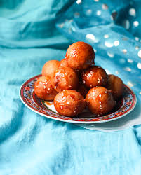
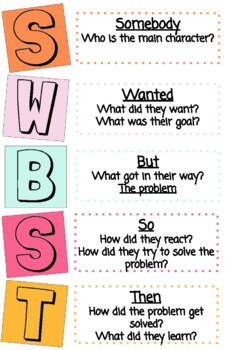
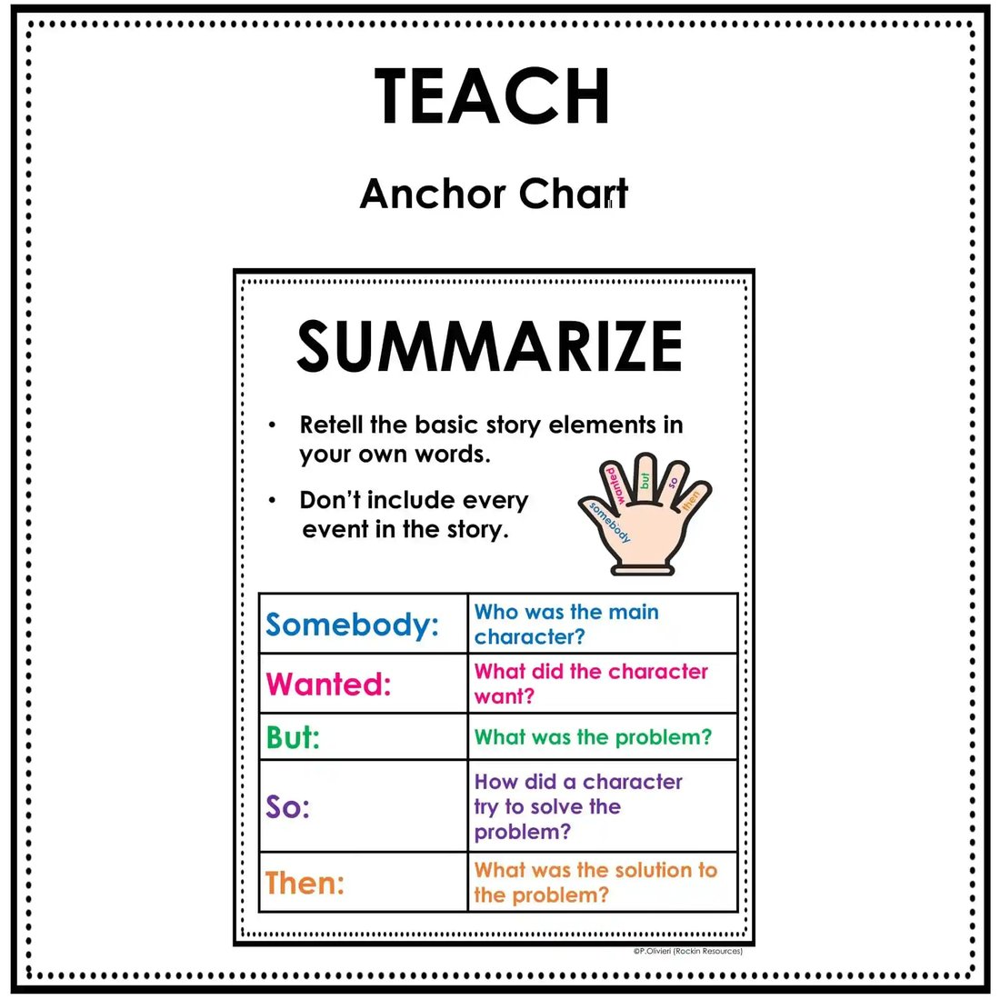
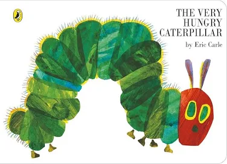

🦎 Week 22 of 35 — Unit 5: Existing, Endangered, Extinct
Week #: 22 of 35 (Unit 5, week 1 of 4) Dates: Feb 14 – Feb 18, 2027 | Unit: Unit 5: The Natural World (Existing, Endangered, Extinct) | |
Unit Padlet
Reading (Word Skills) Padlet (link not found)
Grammar Padlet (link not found)
Writing (Poetry) Padlet (link not found)
Explore (The Natural World) Padlet (link not found)
Practice Websites
Grammar Quest - Daily Oral Language
Maths Quest Pro - Master Your Math Facts!
Extra Math Resources
Unit 1: Math (Place Value and Operations)
Unit 2: Math (Measurement and Data)
Unit 4: Math (Multiplication and Division)
Unit 6: Math (Algebra, FDP, Fractions)
Class | Sunday | Monday | Tuesday | Wednesday | Thursday |
This week's updates / notes: | Finish up all WIDA Testing This week and Unit Test International Mother Tongue Day — 5B @8:45 Ramadan May Start Grey italic text = added in the October 2026 template update (not in the original plan). | No notes for this day. | No notes for this day. | No notes for this day. | No notes for this day. |
Morning Meeting / SEL | Week #16 SEL Lesson - Click Here. Objective for this week is: Working Together 5A- Individual Activity to Whole Group Meeting 5B- One to One Enrichment 5C- Morning Practice | Week #16 SEL Lesson - Click Here. Objective for this week is: Working Together 5A- Individual Activity to Whole Group Meeting 5B- One to One Enrichment 5C- Morning Practice | Week #16 SEL Lesson - Click Here. Objective for this week is: Working Together 5A- Individual Activity to Whole Group Meeting 5B- One to One Enrichment 5C- Morning Practice | Week #16 SEL Lesson - Click Here. Objective for this week is: Working Together 5A- Individual Activity to Whole Group Meeting 5B- One to One Enrichment 5C- Morning Practice | Week #16 SEL Lesson - Click Here. Objective for this week is: Working Together 5A- Individual Activity to Whole Group Meeting 5B- One to One Enrichment 5C- Morning Practice |
Literacy: Vocabulary & Spelling Standards | CC L.5.4, L.5.6 · EE.L.5.4, EE.L.5.6 | CC L.5.4, L.5.6, L.5.2.E, RF.5.3 · EE.L.5.4, EE.L.5.6, EE.L.5.2.H, EE.RF.5.3 | CC L.5.4, L.5.6 · EE.L.5.4, EE.L.5.6 | CC L.5.4, L.5.6 · EE.L.5.4, EE.L.5.6 | CC L.5.4, L.5.6, L.5.2.E, RF.5.3 · EE.L.5.4, EE.L.5.6, EE.L.5.2.H, EE.RF.5.3 |
Literacy: Vocabulary & Spelling Activities/Tasks (Differentiation) Routine: give the definition first (no guessing) → students share where they might use it, similar/different words. Morphology, examples/non-examples, synonyms/antonyms & more on the vocabulary cards: Vocabulary Padlet (incl. Spelling: words Mon · test Thu) | G5: perspective — A particular way of thinking about or looking at something; a point of view. G3: recite — To say something aloud from memory. Unit: resilient — Able to recover quickly from difficulties; tough and adaptable. | G5: metaphor — A figure of speech that compares two unlike things by saying one thing IS another, without using 'like' or 'as.' G3: phrase — A small group of words that express an idea but do not form a complete sentence. Unit: nocturnal — Active at night and resting during the day. Spelling — introduce Week 22 lists (practice all week). Low (Building Spelling Skills, List 22): boy, toy, oil, soil, other, mother, sister, boil, brother, father High (Building Spelling Skills, List 22): frighten, flight, brighter, flashlight, mighty, delight, tighten, nightly, sight, brought, ought, thought, fought, caught, daughter, taught, naughty, fault | G5: symbolize — To represent or stand for something else, especially an idea or quality. G3: publish — To prepare and produce a book, article, or other work so that people can read it. Unit: nuance — A subtle difference in or shade of meaning, expression, or sound. | G5: connotation — An idea or feeling that a word suggests beyond its basic definition. G3: fiction — Literature that describes imaginary people, places, and events. Unit: versatile — Able to adapt or be adapted to many different functions or activities. | G5: implication — A conclusion that can be drawn from something even though it is not directly stated. G3: genre — A category or type of art, music, or literature. Unit: compose — To write or create something, especially a piece of writing or music. |
Literacy: Vocabulary & Spelling Assessment (Differentiation) | Quick check: Use today's word in a spoken or written sentence. Low: match the word to a picture or definition. Mid: complete a sentence frame. High: write an original sentence. | Quick check: Use today's word in a spoken or written sentence. Low: match the word to a picture or definition. Mid: complete a sentence frame. High: write an original sentence. | Quick check: Use today's word in a spoken or written sentence. Low: match the word to a picture or definition. Mid: complete a sentence frame. High: write an original sentence. | Quick check: Use today's word in a spoken or written sentence. Low: match the word to a picture or definition. Mid: complete a sentence frame. High: write an original sentence. | Spelling test — Week 22 lists (Low: List 22 · High: List 22). |
Literacy: Reading Standards | CC RI.5.2 · EE.RI.5.2 | CC RI.5.2 · EE.RI.5.2 | CC RI.5.2, W.5.8 · EE.RI.5.2, EE.W.5.8 | CC RI.5.2, W.5.8 · EE.RI.5.2, EE.W.5.8 | CC RI.5.2, W.5.8 · EE.RI.5.2, EE.W.5.8 |
Literacy: Reading Activities/Tasks (Differentiation) | SeeSaw Rotations: NonFiction Text Features Anchor charts / resources (from the 2025-26 plan): Full Text:Luqaimat is a popular snack in Qatar. It is a small, round dumpling that is crispy on the outside and soft on the inside. People make Luqaimat with flour, yeast, sugar, and milk. They fry the dough until it turns golden brown. Then, they cover it with honey or date syrup to make it sweet. Luqaimat is often eaten during Ramadan and special gatherings. It is a favorite treat for many families in Qatar. Summarized Version:Luqaimat is a sweet dumpling from Qatar. It is fried and covered in honey or date syrup. People enjoy it during Ramadan and special events.  Differentiation: Reading — Struggling learners: Provide a completed example first. Advanced learners: Have them try summarizing without the SWBST chart. | Guided Reading: Warm-Up (3 min): Play a short YouTube video explaining the SWBST strategy for summarizing. Quick discussion: What does each letter stand for?   Practice (10 min): Read a short historical or science passage (Qatar History fun fact, if possible). Work together to fill in the SWBST chart as a class. Have students summarize in their own words using this structure. Differentiation: Reading — Struggling learners: Provide a word bank with alternative words. Advanced learners: Have them paraphrase a full paragraph instead of one sentence. | Guided Reading: Warm-Up (3 min): Show a BrainPOP or YouTube video on Paraphrasing vs. Plagiarism. Discuss: Why can't we copy exactly? (Elicit responses about using your own words). Practice (10 min): Display a short passage from a mentor text. Model how to paraphrase using synonyms and sentence restructuring. Group activity: Give students a sentence, and they must rewrite it in their own words. Sample sentences tie in UPC (Qatar imports/exports content). Differentiation: Reading — Struggling learners: Provide examples of paraphrased and summarized sentences for guidance. Advanced learners: Have them summarize and paraphrase a longer text. | Guided Reading: Warm-Up/Practice (3 min): Quick review: What's the difference between summarizing and paraphrasing? Play a sorting game: Give students examples of sentences and have them decide if they are summaries or paraphrases. Read a short informational passage. Quick Review/Check: Step 1: Have students summarize the paragraph in one sentence. Step 2: Have students paraphrase one sentence from the paragraph. Compare: How are they different? | Guided Reading: Review/Catch-up. Rotations: See Sunday's Options. |
Literacy: Reading Assessment (Differentiation) | Reading — Turn and talk: Share your summary with a partner. Ask: How does the SWBST strategy help us summarize? Listen to partner discussions; check if students use all parts of SWBST correctly. | Reading — Students share their paraphrased sentences with the class. Discuss: What makes a good paraphrase? Listen to student responses and check if they changed the wording without altering meaning. | Reading — Exit ticket: Students write one sentence explaining the difference between summarizing and paraphrasing. | Exit ticket: Write one sentence explaining the difference between summarizing and paraphrasing. Low: sort example cards into summary or paraphrase. Mid: complete a sentence frame. High: write the sentence and give one example of each. | Exit check: Short task on today's focus: read and comprehend grade-band literature and informational text. Low: point to or say the answer with picture/word-bank support. Mid: answer with a sentence frame. High: write a short answer using evidence from the text. |
Literacy: Writing / Language Standards (Language Sun & Tue · Writing Mon & Wed · Thu catch-up) | CC L.5.1.F · EE.L.5.1.F | CC W.5.4, L.5.3.A · EE.W.5.4, EE.L.5.3.A | CC L.5.1.F · EE.L.5.1.F | CC W.5.4 · EE.W.5.4 | CC L.5.1.F, W.5.4, L.5.3.A · EE.L.5.1.F, EE.W.5.4, EE.L.5.3.A |
Literacy: Writing / Language Activities/Tasks (Differentiation) IXL this week: Low: Is it the naming or action part of the sentence? (G1) High: Identify the complete subject of a sentence (G3) · Identify the complete predicate of a sentence (G3) Stretch: Identify the simple subject or predicate of a sentence (G4) · Identify the complete subject or complete predicate of a sentence (G5) | Grammar (Sun) — Parts of a Sentence — Subject OBJ: Identify the complete subject of a sentence Packets — Low (K-1): K: Review: Sentences (who/what practice), G1: L1.6 Sentences (introduce subject concept) · Mid (2-3): G2: L1.7 Statements (who/what = subject), G3: L1.12 Parts of a Sentence — Subject · High (4-6): G4: L1.13 Parts of a Sentence — Subject, G5: L1.24 Simple Sentences (identify subject), G6: L1.27 Simple Sentences (identify simple subject) Animal sentences: The giant panda lives in China. Moved here from Reading: Language links: Parts of Speech Sort · Nouns/Verbs Sort | Writing — What is poetry? Notice imagery; build a nature word bank Read aloud "Sick" by Shel Silverstein and notice rhythm and word choice; watch Writing Poetry for Kids — Ep.1: What is Poetry? (Padlet Topic 3); co-build the rubric, then build a class nature word bank (sight, sound, smell, touch) for a shared topic (beach/desert). Grammar link: adjectives — precise sense words. TWR: sentence expansion IS the imagery engine — kernel "The waves crash." + Where? When? How? = "At night, the grey waves crash against the rocks." Expanded sentences become poem lines later. Unit resources: Unit 5 Poetry Padlet (export) — BrainPOP Jr: Poems IXL: Sensory details match the picture (G2) — Identify sensory details (G3) — Stretch: G4 — Sort sensory details (G5) | Grammar (Tue) — Predicate & Direct Object OBJ: Identify complete predicate and direct object (G4+) Packets — Low (K-1): K: Review: Verbs/Prepositions/Pronouns (predicate concept), G1: L1.2 Verbs (verb = simple predicate) · Mid (2-3): G2: L1.4 Verbs (complete predicate), G3: L1.13 Parts of a Sentence — Predicate, G3: Review: Parts of a Sentence · High (4-6): G4: L1.14 Parts of a Sentence — Predicate, G4: L1.15 Parts of a Sentence — Direct Object, G4: Review, G5: L1.24 Simple Sentences (identify predicate), G6: L1.27 Simple Sentences (identify predicate), G6: L1.14 Transitive Verbs G6: transitive verb connection. | Writing — Write a sense (list) poem — no rhyme needed Model turning word-bank words into short poem lines, one sense per line; students pick a nature topic and write their own sense poem, checking off each sense used. TWR: jot one key word per sense (see: ___, hear: ___...) before writing; each jot grows into a line. Differentiation: Low/Med frame ("I see ___. I hear ___."); High adds a comparing line ("like..."). Resources: Senses Poem Writing Template — word bank: sight, sound, smell, touch | Catch-up day — reteach or extend this week's grammar and writing; finish unfinished drafts; assign this week's IXL practice (links in the left column: Low = reteach, High = consolidate, Stretch = extension). |
Literacy: Writing / Language Assessment (Differentiation) | Language check: Write 3 to 5 sentences that apply today's rule; use this week's IXL skill. Low: K-1 packet page with teacher support. Mid: Grades 2-3 packet page. High: Grades 4-6 packet page or IXL Stretch. | Writing check: Check today's writing against the co-built rubric (one target from today's lesson). Low: oral rehearsal first, then a sentence frame or labelled picture. Mid: word bank and a partner check. High: independent, plus one stretch goal. | Language check: Write 3 to 5 sentences that apply today's rule; use this week's IXL skill. Low: K-1 packet page with teacher support. Mid: Grades 2-3 packet page. High: Grades 4-6 packet page or IXL Stretch. | Writing check: Check today's writing against the co-built rubric (one target from today's lesson). Low: oral rehearsal first, then a sentence frame or labelled picture. Mid: word bank and a partner check. High: independent, plus one stretch goal. | Catch-up check: Check IXL SmartScores on this week's language skills and conference with 2 to 3 writers on unfinished drafts. |
Math Standards (pacing W21, from the Awsaj Math Curriculum) | STANDARD 1. Find pairs of values: 4.OA.B.4 (EE: M.EE.4.OA.4); 6.EE.B.6 2. Solve problems with two unknowns: 3.OA.D.8 (EE: M.EE.3.OA.7) 3. Find pairs of values: 4.OA.B.4 (EE: M.EE.4.OA.4); 6.EE.B.6 | PRIORITY 1. Solve 2-step equations: 3.OA.D.8 (EE: M.EE.3.OA.7) 2. Find pairs of values: 4.OA.B.4 (EE: M.EE.4.OA.4); 6.EE.B.6 | INTERVENTION 1. Find pairs of values: 4.OA.B.4 (EE: M.EE.4.OA.4); 6.EE.B.6 | ||
Math Activities/Tasks (Differentiation) Pacing W21 · B7 Algebra W19–W22 | STANDARD · ~4 new / wk 1. Find pairs of values 4.OA.B.4 6.EE.B.6 ▶ VIDEO · GUIDE · SLIDES · PPT · LESSON · SHEET · DISPLAY · ANSWERS · T/F · PRE-TEACH · TA SHEET · TA ANS · TRANSCRIPT 2. Solve problems with two unknowns 3.OA.D.8 ▶ VIDEO · GUIDE · SLIDES · PPT · LESSON · SHEET · DISPLAY · ANSWERS · T/F · PRE-TEACH · TA SHEET · TA ANS · TRANSCRIPT 3. Find pairs of values 4.OA.B.4 6.EE.B.6 ▶ VIDEO · GUIDE · SLIDES · PPT · LESSON · SHEET · DISPLAY · ANSWERS · T/F · PRE-TEACH · TA SHEET · TA ANS · TRANSCRIPT 1× support block — pick from the panel below End of Block 7 · Algebra Differentiation: Each lesson includes opportunities for partner practice, common misperceptions, independent practice, and a challenge questions for differentiation. | PRIORITY · ~3 new / wk 1. Solve 2-step equations 3.OA.D.8 ▶ VIDEO · GUIDE · SLIDES · PPT · LESSON · SHEET · DISPLAY · ANSWERS · T/F · PRE-TEACH · TA SHEET · TA ANS · TRANSCRIPT 2. Find pairs of values 4.OA.B.4 6.EE.B.6 ▶ VIDEO · GUIDE · SLIDES · PPT · LESSON · SHEET · DISPLAY · ANSWERS · T/F · PRE-TEACH · TA SHEET · TA ANS · TRANSCRIPT 1× support block — pick from the panel below End of Block 7 · Algebra Differentiation: Each lesson includes opportunities for partner practice, common misperceptions, independent practice, and a challenge questions for differentiation. | INTERVENTION · ~2 new / wk 1. Find pairs of values 4.OA.B.4 6.EE.B.6 ▶ VIDEO · GUIDE · SLIDES · PPT · LESSON · SHEET · DISPLAY · ANSWERS · T/F · PRE-TEACH · TA SHEET · TA ANS · TRANSCRIPT 2× support block — pick from the panel below End of Block 7 · Algebra Differentiation: Each lesson includes opportunities for partner practice, common misperceptions, independent practice, and a challenge questions for differentiation. | ||
Math: Support Block Activities/Tasks (pick one) | Rec/PK4 · Combine 2 groups · Y1/KG · Fact families - the eight facts · Y2/Gr.1 · Count in 2s, 5s and 10s · Y2/Gr.1 · Add two 2-digit numbers (across a 10) · Y3/Gr.2 · Apply number bonds within 10 · Y3/Gr.2 · Subtract a 2-digit number from a 3-digit number · Y4/Gr.3 · Compare numbers to 10,000 · Y5/Gr.4 · Inverse operations (addition and subtraction) · Y5/Gr.4 · Multi-step addition and subtraction problems · Y5/Gr.4 · Find missing numbers · Y5/Gr.4 · Factors · Y5/Gr.4 · Two-way tables | ||||
Math Assessment (Differentiation) | Pre-check: Quick pre-check on this week's skills (IXL formative pre-test or 3 questions from the first lesson). | Exit check: 2 to 3 questions from each strand's SHEET or T/F slide at the end of the lesson. Intervention: with the TA sheet and concrete materials. Priority: partner then independent. Standard: independent plus the challenge question. | Exit check: 2 to 3 questions from each strand's SHEET or T/F slide at the end of the lesson. Intervention: with the TA sheet and concrete materials. Priority: partner then independent. Standard: independent plus the challenge question. | Exit check: 2 to 3 questions from each strand's SHEET or T/F slide at the end of the lesson. Intervention: with the TA sheet and concrete materials. Priority: partner then independent. Standard: independent plus the challenge question. | Check: IXL formative assessment on this week's skills. End of block: End of Block 7 · Algebra Version A · Version A · Answers · Version B · Version B · Answers |
Science and/or Social Studies Standards Explore | 5-LS2-1 | 5-LS2-1 | 5-LS2-1, 5-PS3-1 | 5-LS2-1, 5-PS3-1 | 5-LS2-1, 5-PS3-1 |
Activities/Tasks (Differentiation) Explore 3-day plan (Mon–Wed) Living Things & Habitats (Existing) IXL this week: Low: Food Chains (Gr 1) · High: Identify Roles in Food Chains (Gr 4) Stretch: How Does Matter Move in Food Chains? (Gr 5) · Interpret Food Webs I (Gr 5) | Entry Point (Day 1 — Sunday): Entry Point — Endangered / Extinct Game · done on the SUNDAY the unit starts (Day 1) Entry hook: show photos of animals (oryx, dugong, dodo, dinosaur, tiger…) and ask explorers to sort them into existing · endangered · extinct — what do those words mean, and how can we tell? Set the mission: each explorer will build a Diorama Biosphere (Week 4) showing an animal in its habitat and how it survives. Built from the 2025-26 Living Things weekly plans and the EEE task decks (classification, food chains, life cycles, diorama). | Mon · Hook + Investigate ▶ Hook video: ‘Animal Habitats’ — STEM and Beyond (real footage, ~4 min) Vocab: living thing, habitat, species, biosphere, survive. Investigate: what do living things need to survive? Match animals to their habitats (desert, ocean, forest). Additional practice: BrainPOP Jr — Ocean Habitats for a second real habitat model. Objective: Identify what living things need to survive and match animals to the correct habitat (desert, ocean, forest). Explorer photos / resources (from last year's plans): Show baby animal pictures. Can access this learning through the story of The Very Hungry Caterpillar  | Tue · Apply + Record Apply — Food chains: energy from the Sun → producers → consumers; build a simple food chain for a habitat. Epic read: ‘Animal Habitats’ / ‘What Is a Food Chain?’ (Epic). Roles in the chain: name producer, consumer, and decomposer for each link (fungi break down dead matter and recycle it — see BrainPOP — Fungi); sort with the Twinkl — Producers, Consumers & Decomposers sorting activity. Objective: Build a simple food chain and name the role (producer, consumer, decomposer) of each link. | Wed · Review + Check Review: living things & their habitats; quick check. Extra check: IXL Grade 5 Science — Identify roles in food chains. Objective: Recall the habitats, needs, and food-chain roles of living things covered this week. | Review / catch-up — consolidate Mon–Wed learning; complete recordings/reflections; reteach or extend as needed. |
Assessment (Differentiation) Explore | Entry check: Sort 3 animal photos into existing, endangered or extinct and say why. Low: point and say with picture cards. Mid: use a sentence frame. High: explain one sort with a reason. | Assessment: Sort animal cards into the correct habitat and name one thing that animal needs to survive there. Differentiation: Sort with a partner and picture cues / sort independently with picture cues / sort independently and explain why the animal needs that habitat. | Assessment: Label a food chain's links as producer, consumer, or decomposer and explain how energy moves from the Sun through the chain. Differentiation: Label with word bank and picture support / label with word bank only / label and explain each role independently. | Assessment: Answer a quick-check question naming a habitat, a survival need, and a food-chain role from this week. Differentiation: Answer with sentence starters and a word bank / answer with a word bank only / answer independently in a full sentence. | Review check: Students explain one thing they learned in Explore this week, using a key word from the unit. Low: point and say with a picture. Mid: sentence frame. High: written explanation. |